CQRS & EventSourcing discovery
Workshop
Florent @florentpellet
Clément @clem_bouillier
Jean @jeanhelou
Emilien @ouarzy
Who are we ?
- 4 passionate guys initiated this workshop in 2015
- Feel free to give some feedbacks on GitHub
-
Clément@clem_bouillier
-
 Emilien@ouarzy
Emilien@ouarzy -
 Florent@florentpellet
Florent@florentpellet -
Jean@jeanhelou
CQRS Concept
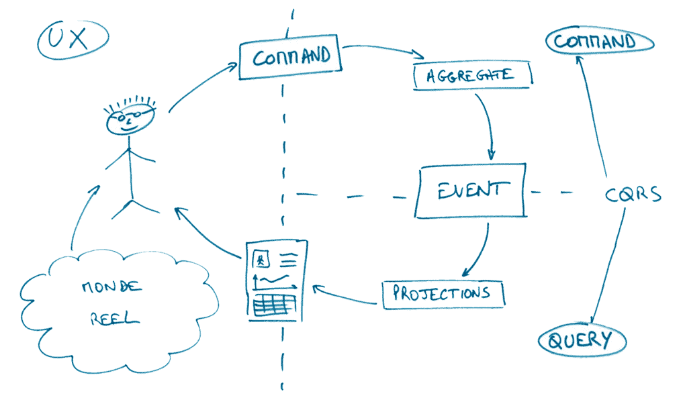Ref. "Conceptual CQRS" - Alberto Brandolini
Event Sourcing Concept
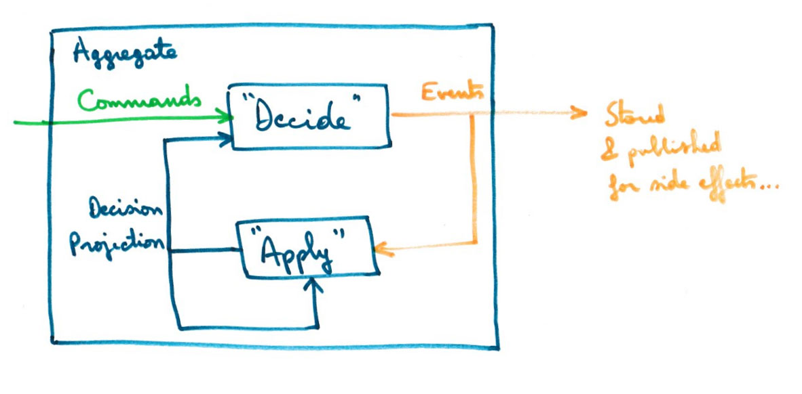NB: DecisionProjection is also called State
Ref. Jérémie Chassaing
The new unicorn
We’ll revolutionize the web!
We’ll create a product like Twitter but better ...
A revolution!
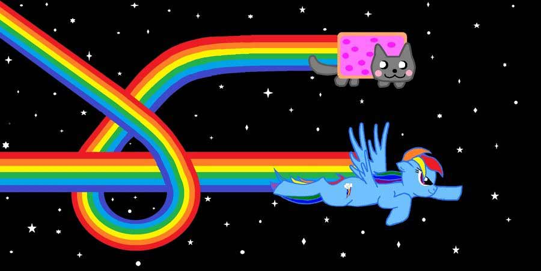Mixter
Instead tweet...
we'll quack!
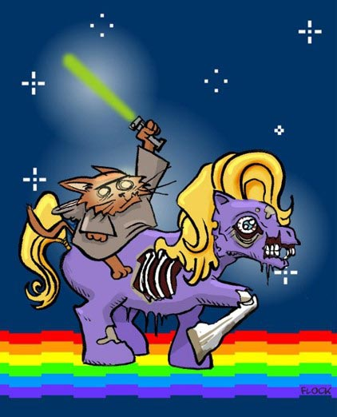Event Storming mixter
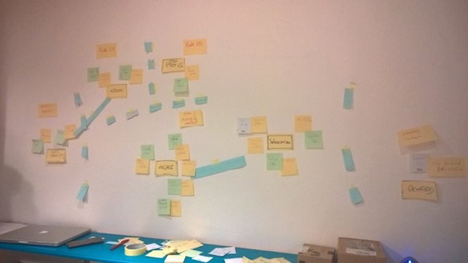 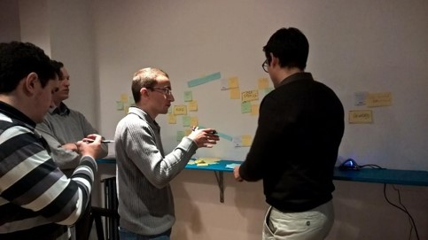 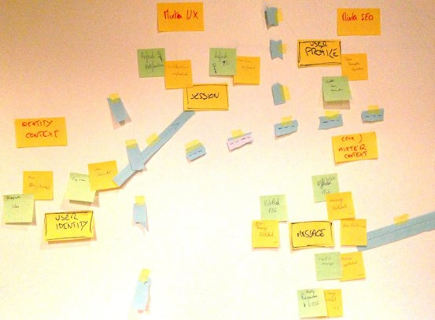 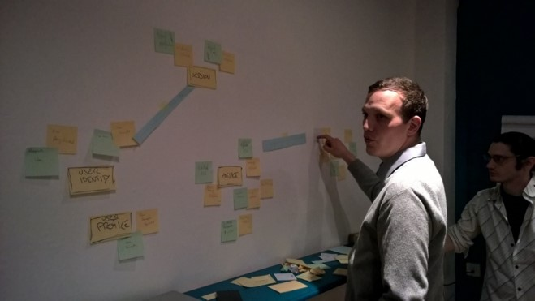Ref. "Event Storming" - Alberto Brandolini
Test Driven Workshop
- Working in pairs
- Execute "run" script and read instructions
- Red Test => Green Test
-
3 steps (+2 Bonus)
- Command DeleteMessage
- Query Timeline Message
- Events in aggregate
Focus on Core Domain
-
Do not change
- Tests code
- Infrastructure code
- You can see Identity context implementation as example
GIT Repository
git clone https://github.com/DevLyon/mixter.git
./run
Slide : http://devlyon.fr/mixter/
1. Delete Command
What we will learn :
- publish events from aggregate,
- use projection for decision inside aggregate (contains only "state" for future decision, DO NOT keep all state like in an entity)
- Implement "business rules" that insure aggregate consistency (based on decision projection and command=method parameters)
In brief : the C of CQRS

- 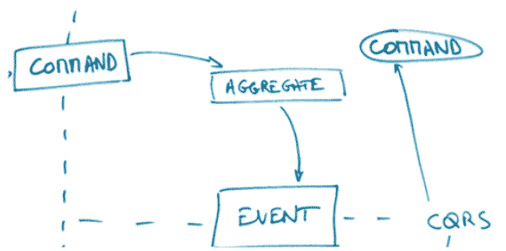
2. Timeline messages Projection
What we will learn :
- Create another model for Query (Projection, TimelineMessageProjection)
- Transform events in a projection model through an EventHandler
- A projection repository (in-memory) with its interface is given
In brief : Q of CQRS
- 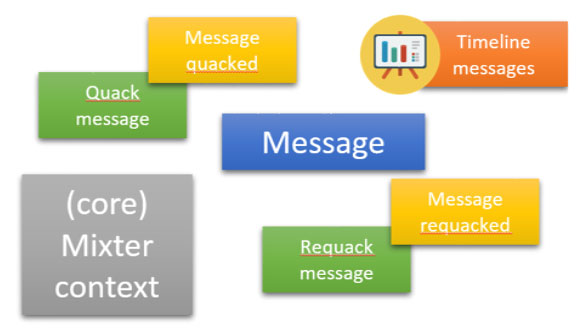
- 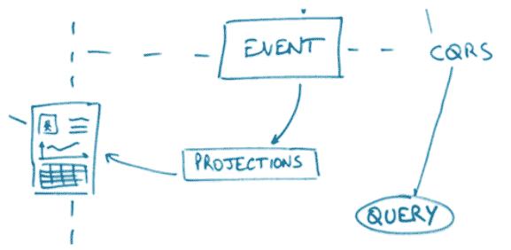
3. Subscription Aggregate
What we will learn :
- Create a new aggregate (Subscription)
- Raise events from it : UserFollowed and UserUnfollowed
- Create a decision projection for it
- Implement replay of events (event sourced aggregate)
In brief : C of CQRS + Event Sourcing
- 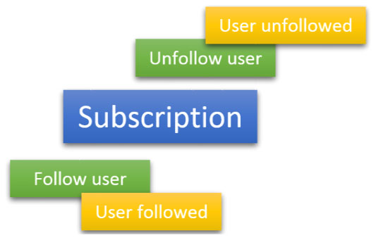
4. Aggregates interaction
What we will learn :
- Coordinate several aggregates to limit coupling
- Concept of " Eventual consistency"
- 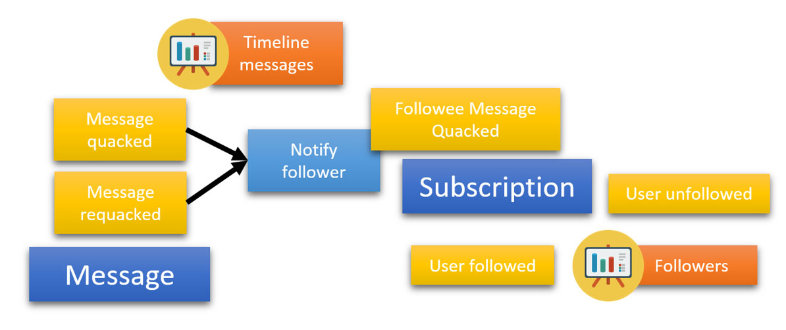
5. Command Handler
What we will learn :
- Integrate previous code from Message & Identity contexts in a command
- Write some web infrastructure code executing the command
=> Request Rest to execute delete Message command, with session validity verification
NB : no tests for this step for now…
- 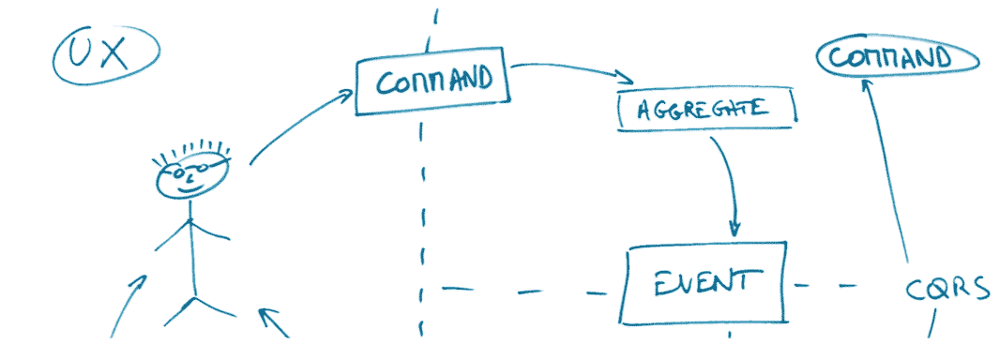
CQRS & EventSourcing discovery
Thanks!
Florent @florentpellet
Clément @clem_bouillier
Jean @jeanhelou
Emilien @ouarzy